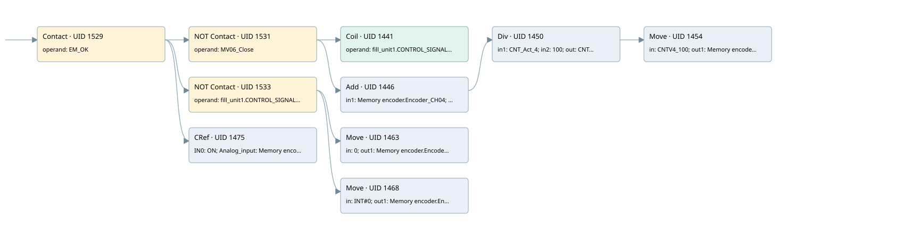

mv06 data management
analog input conversion · 검색 색인 순서 36 · 원본 내부 NID 추정 35
백업 PLF 원본의 3150892 바이트 위치에서 복원한 XML. 검색 문서 1766의 객체 키 16102200326b000000000000와 연결했다. 이름 해석 22/22개. 남은 RefId는 상수 또는 미해석 참조다.
연결 구조 다시 그리기
원본 Part/PCon/Wire를 이용한 연결도다. TIA 화면의 래더 배치 또는 실행 결과를 재현한 그림은 아니다. 핀 연결은 아래 표와 원본 XML을 기준으로 읽는다. 노드 위에 마우스를 두면 피연산자 이름을 볼 수 있다.

접점·코일·블록과 피연산자
| Part UID | Gate | Negated 핀 | 연결 피연산자 |
|---|---|---|---|
| 1529 | Contact | operand = EM_OK | |
| 1531 | Contact | operand | operand = MV06_Close |
| 1441 | Coil | operand = fill_unit1.CONTROL_SIGNALS.SW_GATE4 | |
| 1446 | Add | in1 = Memory encoder.Encoder_CH04; in2 = fill_unit1.ACT_CNTV4; out = CNT_Act_4 | |
| 1450 | Div | in1 = CNT_Act_4; in2 = 100; out = CNTV4_100 | |
| 1454 | Move | in = CNTV4_100; out1 = Memory encoder.Encoder_CH04_10 | |
| 1533 | Contact | operand | operand = fill_unit1.CONTROL_SIGNALS.SW_GATE4 |
| 1463 | Move | in = 0; out1 = Memory encoder.Encoder_CH04_10 | |
| 1468 | Move | in = INT#0; out1 = Memory encoder.Encoder_CH04 | |
| 1475 | CRef | 호출 참조: Signal linearization; IN0 = ON; Analog_input = Memory encoder.Encoder_CH04_10; Coeff = Coeff.Coeff_MV06; Zero = Coeff.Zero_MV06; OutValue = Data.Pot_MV06; Out_of_range = Allarm.Pot_MV06_OFR |
접점 경로를 펼친 조건식
Contact·O/A·비교기의 원본 연결을 읽기 쉽게 펼친 보조 해석이다. POWER는 전원 레일 시작을 뜻한다. 호출 블록·에지·타이머의 내부 동작과 다중 쓰기 순서는 이 표로 실행 검증하지 않았다. 미해석 핀과 RefId는 원문 연결표에서 확인한다.
| UID | 동작 | 대상 | 원본 접점 경로 | 내용 |
|---|---|---|---|---|
| 1441 | Coil | fill_unit1.CONTROL_SIGNALS.SW_GATE4 | (EM_OK AND NOT [MV06_Close]) | 조건에 따른 Coil 기록 |
| 1454 | Move | Memory encoder.Encoder_CH04_10 | Div UID 1450.eno (블록 동작 확인) | Move 입력 CNTV4_100 |
| 1463 | Move | Memory encoder.Encoder_CH04_10 | (EM_OK AND NOT [fill_unit1.CONTROL_SIGNALS.SW_GATE4]) | Move 입력 0 |
| 1468 | Move | Memory encoder.Encoder_CH04 | (EM_OK AND NOT [fill_unit1.CONTROL_SIGNALS.SW_GATE4]) | Move 입력 INT#0 |
원본 배선 연결
| Wire UID | 동일 Wire 연결 끝점 |
|---|---|
| 1535 | Powerrail {} ↔ Part 1529.in |
| 1503 | ORef 1480 (EM_OK) ↔ Part 1529.operand |
| 1530 | Part 1529.out ↔ Part 1531.in ↔ Part 1533.in ↔ Part 1475.en |
| 1504 | ORef 1481 (MV06_Close) ↔ Part 1531.operand |
| 1532 | Part 1531.out ↔ Part 1441.in ↔ Part 1446.en |
| 1505 | ORef 1482 (fill_unit1.CONTROL_SIGNALS.SW_GATE4) ↔ Part 1441.operand |
| 1506 | ORef 1483 (Memory encoder.Encoder_CH04) ↔ Part 1446.in1 |
| 1507 | ORef 1484 (fill_unit1.ACT_CNTV4) ↔ Part 1446.in2 |
| 1509 | Part 1446.eno ↔ Part 1450.en |
| 1508 | Part 1446.out ↔ ORef 1485 (CNT_Act_4) |
| 1510 | ORef 1486 (CNT_Act_4) ↔ Part 1450.in1 |
| 1511 | ORef 1487 (100) ↔ Part 1450.in2 |
| 1513 | Part 1450.eno ↔ Part 1454.en |
| 1512 | Part 1450.out ↔ ORef 1488 (CNTV4_100) |
| 1514 | ORef 1489 (CNTV4_100) ↔ Part 1454.in |
| 1515 | Part 1454.out1 ↔ ORef 1490 (Memory encoder.Encoder_CH04_10) |
| 1517 | ORef 1491 (fill_unit1.CONTROL_SIGNALS.SW_GATE4) ↔ Part 1533.operand |
| 1534 | Part 1533.out ↔ Part 1463.en ↔ Part 1468.en |
| 1518 | ORef 1492 (0) ↔ Part 1463.in |
| 1519 | Part 1463.out1 ↔ ORef 1493 (Memory encoder.Encoder_CH04_10) |
| 1520 | ORef 1494 (INT#0) ↔ Part 1468.in |
| 1521 | Part 1468.out1 ↔ ORef 1495 (Memory encoder.Encoder_CH04) |
| 1523 | ORef 1497 (ON) ↔ Part 1475.IN0 |
| 1524 | ORef 1498 (Memory encoder.Encoder_CH04_10) ↔ Part 1475.Analog_input |
| 1525 | ORef 1499 (Coeff.Coeff_MV06) ↔ Part 1475.Coeff |
| 1526 | ORef 1500 (Coeff.Zero_MV06) ↔ Part 1475.Zero |
| 1527 | Part 1475.OutValue ↔ ORef 1501 (Data.Pot_MV06) |
| 24 | Part 1475.Out_of_range ↔ ORef 23 (Allarm.Pot_MV06_OFR) |
식별자 해석 근거 22개
| ORef UID | RefId | 이름 | IdentXmlPart 파일 | 해석 방법 |
|---|---|---|---|---|
| 1480 | 173 | EM_OK | 0678-IdentXmlPart.xml | UID/RID + search-text + NID agreement |
| 1481 | 260 | MV06_Close | 0678-IdentXmlPart.xml | UID/RID + search-text + NID agreement |
| 1482 | 261 | fill_unit1.CONTROL_SIGNALS.SW_GATE4 | 0676-IdentXmlPart.xml | UID/RID + search-text + NID agreement |
| 1483 | 204 | Memory encoder.Encoder_CH04 | 0676-IdentXmlPart.xml | UID/RID + search-text + NID agreement |
| 1484 | 263 | fill_unit1.ACT_CNTV4 | 0676-IdentXmlPart.xml | UID/RID + search-text + NID agreement |
| 1485 | 203 | CNT_Act_4 | 0677-IdentXmlPart.xml | UID/RID + search-text + NID agreement |
| 1486 | 203 | CNT_Act_4 | 0677-IdentXmlPart.xml | UID/RID + search-text + NID agreement |
| 1487 | 211 | 100 | 0675-IdentXmlPart.xml | literal candidate: UID/RID/NID + nearby named declarations + search-text agreement |
| 1488 | 265 | CNTV4_100 | 0677-IdentXmlPart.xml | UID/RID + search-text + NID agreement |
| 1489 | 265 | CNTV4_100 | 0677-IdentXmlPart.xml | UID/RID + search-text + NID agreement |
| 1490 | 267 | Memory encoder.Encoder_CH04_10 | 0676-IdentXmlPart.xml | UID/RID + search-text + NID agreement |
| 1491 | 261 | fill_unit1.CONTROL_SIGNALS.SW_GATE4 | 0676-IdentXmlPart.xml | UID/RID + search-text + NID agreement |
| 1492 | 44 | 0 | 0675-IdentXmlPart.xml | literal candidate: UID/RID/NID + nearby named declarations + search-text agreement |
| 1493 | 267 | Memory encoder.Encoder_CH04_10 | 0676-IdentXmlPart.xml | UID/RID + search-text + NID agreement |
| 1494 | 327 | INT#0 | 0675-IdentXmlPart.xml | literal candidate: UID/RID/NID + nearby named declarations + search-text agreement |
| 1495 | 204 | Memory encoder.Encoder_CH04 | 0676-IdentXmlPart.xml | UID/RID + search-text + NID agreement |
| 1497 | 1 | ON | 0678-IdentXmlPart.xml | UID/RID + search-text + NID agreement |
| 1498 | 267 | Memory encoder.Encoder_CH04_10 | 0676-IdentXmlPart.xml | UID/RID + search-text + NID agreement |
| 1499 | 271 | Coeff.Coeff_MV06 | 0676-IdentXmlPart.xml | UID/RID + search-text + NID agreement |
| 1500 | 272 | Coeff.Zero_MV06 | 0676-IdentXmlPart.xml | UID/RID + search-text + NID agreement |
| 1501 | 273 | Data.Pot_MV06 | 0676-IdentXmlPart.xml | UID/RID + search-text + NID agreement |
| 23 | 440 | Allarm.Pot_MV06_OFR | 0676-IdentXmlPart.xml | UID/RID + search-text + NID agreement |
검색 코드 보조 자료
참조 명칭을 찾기 위한 자료이며 실행 순서나 AND/OR 관계는 위 연결표로 확인한다.
"em_ok" "mv06_close" "fill_unit1".control_signals.sw_gate4 "fill_unit1".control_signals.sw_gate4 move 0 move int#0 "memory encoder".encoder_ch04 "memory encoder".encoder_ch04_10 "signal linearization" "on" "memory encoder".encoder_ch04_10 "coeff".coeff_mv06 "coeff".zero_mv06 "data".pot_mv06 "allarm".pot_mv06_ofr add "memory encoder".encoder_ch04 "fill_unit1".act_cntv4 div #cnt_act_4 100 move #cntv4_100 #cnt_act_4 #cntv4_100 "memory encoder".encoder_ch04_10